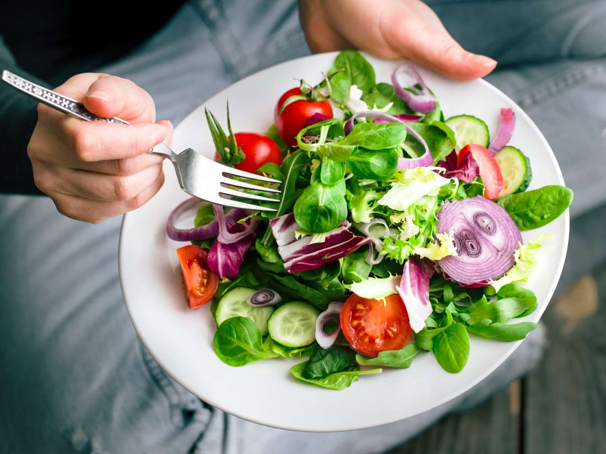

Um pouquinho sobre nossa empresa e a importância de se alimentar de forma saudável.
Nós somos uma empresa que pensa muito no bem estar e saúde dos nossos clientes, iniciamos nossas atividades em 2020, no inicio da pandemia e pensamos em como facilitar a vida das pessoas, com refeições maravilhosas e saudáveis, sem precisar passar horas cozinhando.
Alguns benefícios da alimentação saudável e balanceada:
- Perda de Peso
- Redução do risco de câncer
- Gestão de Diabetes
- Saúde do coração e prevenção do AVC
- Ossos e dentes fortes
- Melhor humor
- Memória melhorada
- Melhora na saúde intestinal, entre outros benefícios. 
Nossas marmitas são recheadas de verduras, legumes, arroz vegetal e várias variedades, como:
- Alface;
- Berinjela;
- Cenoura;
- Mandioca;
- Batata Doce, entre outros.
Venha fazer parte da nossa familia e se alimente melhor, com uma comida caseira, deliciosa e muito saudável. Se estiver seguindo alguma dieta ou tem alergia a algum alimento, podemos fazer marmitas especiais.